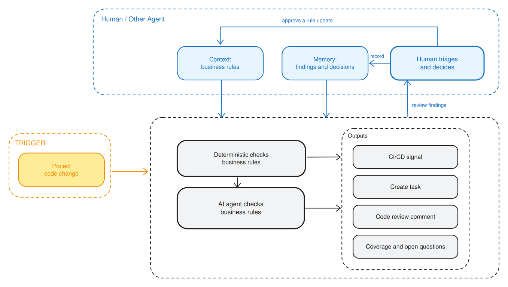

6 Rounding as an AI-first workflow
An AI-first workflow can turn written business rules into continuous, evidence-backed checks while keeping exceptions and policy decisions with people.
Imagine that two programmers prepare the same summary in different languages. One implementation uses the default SAS rounding function; the other uses the default R function. Most values agree, but exact ties do not. A reviewer finds the difference only after a table has been produced. The calculation is small; the real problem is that an organizational rule was never made executable at the moment the code changed.
This chapter applies the AI-first SDLC from Chapter 5 to that problem.
This chapter defines the intended workflow, task contract, business rules, roles, evidence, and planned lifecycle artifacts. It does not yet provide a reproducible R prototype, benchmark results, release, or operating history.
| Example contract | Definition |
|---|---|
| Problem | Rounding and display rules can be applied inconsistently across programs, languages, and studies |
| Learning objective | Show how deterministic checks, a focused agent review, and a human decision can enforce a small set of explicit business rules |
| Workflow boundary | Begins when project code changes; checks rounding method, rounding stage, and display precision; ends when a named reviewer records a decision |
| Non-goals | Validate the statistical method, replace independent QC, review every programming standard, change source data, or approve policy exceptions automatically |
| Why this is well defined | The trigger, three rules, permitted evidence, structured output, stopping conditions, and accountable human role can all be stated explicitly |
6.1 Plan — Frame the workflow
Clinical teams use business rules to produce consistent work across studies, tools, and programmers. The rules may govern derivations, naming, rounding, display conventions, or escalation. A rule is useful only when the team can tell where it applies, whether it was followed, and who decides an exception.
Many rules never appear in a protocol or statistical analysis plan (SAP). They live in standards documents, review comments, and the memory of experienced colleagues. Manual review is therefore fragile. It depends on the right reviewer noticing the right detail at the right time.
6.1.1 Rounding exposes the problem
Common programming tools differ at exact ties:
| Language or tool | Default tie behavior | -2.5 |
2.5 |
|---|---|---|---|
SAS ROUND() |
half away from zero | -3 | 3 |
R round() |
half to even | -2 | 2 |
Python round() |
half to even | -2 | 2 |
Display adds a separate choice. The values 76, 76.0, and 76.00 are numerically equal, but they communicate different precision in a table. A program can calculate the intended number and still produce an output that violates an organization’s reporting convention.
The lesson is not that one language is correct. A language default is an implementation choice, not organizational policy. The minimum valuable workflow is a review of three rounding rules whenever relevant project code changes.
6.1.2 Canonical artifact: Workflow brief
The workflow brief is defined in the opening contract and adds three candidate success measures:
- known violations are found with a rule identifier, code location, and supporting evidence;
- compliant examples are not flagged, and every run reports its coverage; and
- exceptions reach the named reviewer and the resulting decision is recorded.
Artifact status: defined as a design pattern. The rule owner still needs to accept the intended scope, baseline, and quantitative thresholds before a prototype is built. An accepted workflow brief would initiate Design.
6.2 Design — Specify the workflow
The Design stage turns the business intent into rules and a task contract that both deterministic tools and an agent can follow.
6.2.1 Make the three rules explicit
This design assumes that the organization adopts the following contract:
Business rule 1: Exact decimal ties are rounded half away from zero.
Business rule 2: Calculations use unrounded values; rounding occurs once, when the final result is prepared for display.
Business rule 3: Display precision is specified for each reported statistic and preserved, including trailing zeros.
Together, the rules identify both the expectation and the evidence needed to review it:
| Rule | What it prevents | Evidence needed |
|---|---|---|
| Tie method | Tool defaults changing a result | Boundary-test results and the formatter used |
| Rounding stage | Double or intermediate rounding | Calculation path from source value to display |
| Display precision | Suppressed or inconsistent decimals | Precision specification and rendered output |
The rule contract should be versioned and include an owner, scope, examples, and change history. If a rule cannot determine an answer, the workflow should ask for clarification rather than invent a convention.
6.2.2 Canonical artifact: Task contract
| Contract element | Specification |
|---|---|
| Objective | Review changed code for violations of the three approved rounding rules |
| Trigger | A pull request or equivalent event changes relevant project code or output |
| Inputs | Changed files, current rule contract, precision specification, affected output, and prior approved decisions |
| Deterministic work | Scan call sites, run boundary tests, and compare rendered output with expected display |
| Agent work | Trace data flow, connect evidence across files, and explain cases that deterministic checks cannot settle |
| Required output | Structured findings plus a coverage report |
| Boundaries | Read the scoped artifacts and run approved checks; do not modify source data or approve an exception |
| Stop conditions | Missing rule version, missing precision specification, conflicting evidence, or a question requiring policy judgment |
| Human decision | Accept, reject, or request a change, then record the reason |

The task contract produces a five-step runtime path:
| Step | Action | Owner |
|---|---|---|
| 1. Trigger | Identify changed files and affected outputs | Version-control system |
| 2. Load context | Read the rule contract and prior approved decisions | Workflow |
| 3. Check | Run source scans, boundary tests, and output comparisons | Deterministic tools |
| 4. Interpret | Trace data flow and explain unresolved cases | AI agent |
| 5. Decide | Accept, reject, or request a change; record the reason | Accountable reviewer |
Deterministic checks run before model interpretation because repeatable facts should not depend on model judgment. The human reviewer acts last because an agent can prepare evidence but cannot approve an exception or change policy.
6.2.3 Walk through one code change
Suppose a programmer adds this code while preparing a mean change from baseline:
subject_change <- round(adam$CHG, 1)
mean_change <- mean(subject_change, na.rm = TRUE)
display_mean <- as.character(mean_change)The design expects three findings:
| Rule | Expected finding |
|---|---|
| 1 | round() uses R’s default tie method rather than the approved method |
| 2 | Subject-level values are rounded before the mean is calculated |
| 3 | as.character() does not apply the specified precision or preserve trailing zeros |
A source scanner can locate round() and as.character(). Boundary tests can demonstrate tie behavior, and an output comparison can detect lost zeros. The agent adds value by tracing subject_change into mean_change and explaining that rounding occurs before aggregation.
An implementation consistent with the contract would retain the unrounded values and route the final statistic through an organization-approved helper:
mean_change <- mean(adam$CHG, na.rm = TRUE)
display_mean <- format_org_number(mean_change)Here, format_org_number() is a proposed interface, not an implementation provided by this chapter.
Each finding should be a small record that a reviewer can verify and close:
id: BR-NUM-001-0042
rule: BR-NUM-001.2
location: R/table-change.R:18
observed: subject values are rounded before the mean is calculated
evidence: subject_change flows into mean_change on line 19
status: needs_review
owner: statistical-programming-lead
question: Should the intermediate rounding be removed?Artifact status: the task contract is specified at design-pattern maturity. The example has not yet demonstrated that all required inputs and evidence can be retrieved from a working environment. Acceptance of this contract would initiate Build.
6.3 Build — Prototype the workflow
The minimum prototype should implement one complete path from a changed R file to a structured finding and recorded human decision. It does not require a large agent platform.
6.3.1 Canonical artifact: Prototype
The intended build sequence is:
- encode the three rules and their owners in a versioned, machine-readable contract;
- implement an organization-approved rounding and formatting helper;
- create compliant and noncompliant R fixtures, including positive and negative ties, intermediate rounding, and trailing-zero cases;
- automate deterministic scans, boundary tests, and output comparisons;
- give the agent only the changed code, rule contract, test results, affected output, and prior approved decisions; and
- store structured findings, coverage, and reviewer decisions together.
The prototype should use AI only for the remainder after deterministic checks: tracing context across artifacts, explaining uncertain cases, and preparing a focused question for the reviewer.
This design pattern does not include runnable R functions, fixtures, automated tests, agent instructions, or expected output files. Those materials are required before the chapter can claim reproducible-prototype maturity. Their implementation is tracked in GitHub issue #5.
Because the canonical Prototype artifact is unavailable, Build has no acceptance event and the lifecycle cannot yet advance to a real Test stage.
6.4 Test — Benchmark and evaluate
The future benchmark should be specified before prototype results are examined. At minimum, it should include the following controlled cases:
6.4.1 Canonical artifact: Benchmark report
| Case | Expected behavior |
|---|---|
| Positive and negative exact ties | Apply half away from zero consistently |
| Compliant unrounded aggregation | Produce no rounding-stage finding |
| Intermediate rounding before a mean | Cite the data flow and flag rule 2 |
| A two-decimal display of the value 76 | Preserve the result as 76.00 |
| Missing precision specification | Stop the affected check and request clarification |
| Files outside the declared scope | Exclude them and report that coverage boundary |
Candidate acceptance thresholds are complete detection of the seeded deterministic violations, no false positives in the compliant fixtures, and a coverage report on every run. Agent-assisted findings should be evaluated separately for correct evidence, unsupported claims, missed findings, repeatability, and useful escalation.
No controlled benchmark has been run. The expected cases and candidate thresholds above are a Test plan, not measured performance.
Without a versioned Prototype artifact and Benchmark report, no evidence supports a deployment decision.
6.5 Deploy — Operationalize the workflow
The first intended release is an advisory pilot on relevant code changes. Deterministic checks may block a change only when an approved test proves a violation. Agent interpretations should appear as nonblocking findings for a named human reviewer.
6.5.1 Canonical artifact: Release record
A future Release record should identify:
- the accepted rule, code, test, instruction, and tool versions;
- the repositories, file patterns, and output types in scope;
- the pull-request trigger and required inputs;
- the permissions granted to deterministic tools and the agent;
- the format and destination of findings and coverage reports;
- the accountable reviewer and escalation path;
- the monitoring measures; and
- the procedure for suspending or reversing the release.
The workflow has not passed its benchmark and has not been released or piloted. The advisory operating model above is a deployment design, not operating evidence.
Deploy remains unavailable until a human accepts the Benchmark report and authorizes the pilot.
6.6 Maintain — Monitor and improve
Once released, the workflow should be monitored as both a rule-enforcement process and a human-agent collaboration. Useful measures include:
6.6.1 Canonical artifact: Monitoring report
- findings, false positives, missed cases, and coverage by rule;
- human acceptance, rejection, override, and escalation patterns;
- changes in R, dependencies, formatting helpers, or source conventions;
- cases that repeatedly require policy clarification;
- latency and cost when they affect use; and
- incidents or suspended runs caused by missing or conflicting evidence.
The feedback loop is governed. An agent may propose a rule, instruction, test, or workflow update, but the rule owner approves the change. An accepted change updates the Workflow brief or Task contract, adds the corresponding fixtures, and begins a new lifecycle cycle.
There is no operating workflow and therefore no monitoring history. This section defines the signals and decisions that the future Monitoring report must contain.
6.7 Summary
Rounding becomes a well-defined AI-first workflow when three explicit business rules are connected to a code-change event, deterministic evidence, focused agent interpretation, and a recorded human decision.
At design-pattern maturity, the Workflow brief and Task contract can be inspected. The Prototype, Benchmark report, Release record, and Monitoring report remain future artifacts. Making those gaps explicit prevents a proposed workflow from being mistaken for a tested or operating system.